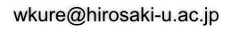

Wataru Kurebayashi, Ph.D. in Engineering, Assistant Professor, Hirosaki University
弘前大学教育推進機構 教育戦略室 助教 紅林 亘 博士(工学)
Thank you for visiting my webpage!
Please don't hesitate to contact me if you have any questions or comments regarding our research projects.
My e-mail address is as follows:

Note: * denotes the correspoding author.